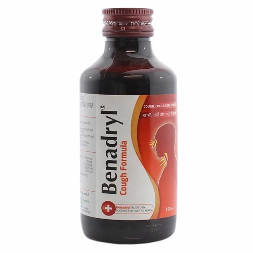

Got a cold and need something for a nagging cough? Some over-the-counter treatments
may give you relief.
Three types of medicines can ease a cough caused by a cold or
bronchitis suppressants , expectorants,
and ointments you apply to your skin
called topicals.
Expectorants help thin mucus, making it easier to cough up.The ingredient guaifenesin is the only expectorant in
the U.S.,so look for it on the label if you need an expectorant.
Suppressants help cut the number of times you cough. The active ingredient listed is usually dextromethorphan (DM).
Other cough suppressants include camphor, eucalyptus oil, and menthol.
Combination cough products have more than one active ingredient. They have both guaifenesin and dextromethorphan.
Cough medicines may also contain ingredients to help coat and soothe the throat.
Expectorants help thin the secretions in your airway and loosen up mucus, so you can make your cough
more productive.Expectorants are generally safe to use, but it’s importantto read labels and speak with
your healthcare provider about any possible interactions.For medicine including expectorant one can
take "Ascroll syrup" which inlcude expectorant.

Cough suppressants like dextromethorphan help by controlling your cough reflex.
They usually work better for a “dry” (non-productive) cough, which usually results from irritation.
Products such as menthol cough drops have a cooling effect in addition to opening your airways to help prevent coughing.
Using syrups like "Benadryl" works good for cough due to suppressants.